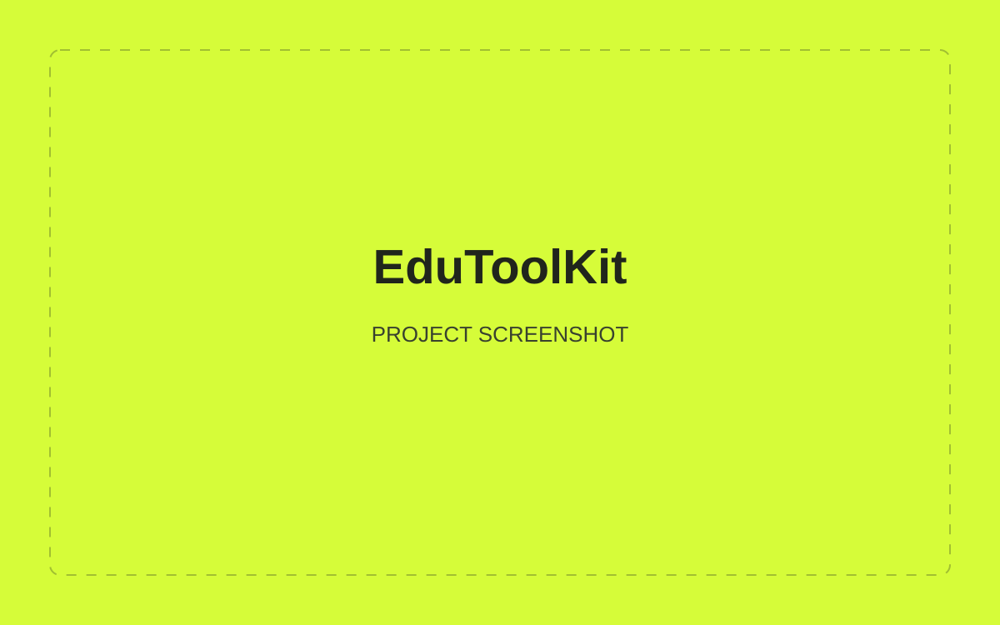
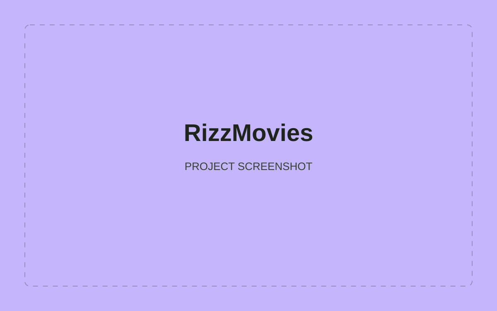

01 / EDUCATION
EduToolKit
Mobile-friendly tools for academic writing, grade calculation and referencing.
Explore website ↗Hello, I’m
Research with purpose.
Websites with impact.

I’m Rizwan Ali, an independent AI researcher and MSc Big Data Technologies graduate from GCU London.
My journey began in SEO and web development. Today, I build interpretable AI systems and digital experiences that people can understand and use.
From student tools to local businesses.
Selected websites I’ve created.

Mobile-friendly tools for academic writing, grade calculation and referencing.
Explore website ↗
A business website presenting roofing services for homes and businesses in West London.
Explore website ↗
A dedicated business website created for UXK Meat Trader.
Explore website ↗
A movie and series website with an admin CMS for publishing titles and managing third-party video embeds.
Custom website & admin CMSI combine a computer science foundation, postgraduate study in Big Data Technologies and over 10 years of hands-on SEO experience. My work connects data analytics, interpretable AI and web development with practical business needs.
Glasgow Caledonian University · London campus
September 2024 – September 2025
Focus: machine learning, explainability, evaluation and data-driven system design.
NCBA&E · Lahore
September 2012 – September 2016
Smart and Solver Software House
Trained professionals in SEO tools and techniques, sharing practical approaches to improving online visibility.
Pasban Groups
Gained practical experience in SEO and digital marketing.
Credit card fraud detection and financial market signal prediction, with an emphasis on SHAP-based interpretation and reproducible workflows.
Business websites, student tools and content-managed experiences, including EduToolKit, B&M Pro Roofing, UXK Meat Trader and RizzMovies.
From your first landing page to a complete website.
Select what you need and let’s talk.
Website development, focused landing pages and SEO, brought together around your business and your goals.
Exploring explainability, financial systems
and responsible AI deployment.
Using XGBoost, Deep Neural Networks and SHAP-Based Interpretability.
A Deployable and Interpretable AI Framework for 24-Hour Directional Market Signal Prediction.
Research, code and a direct line to me.